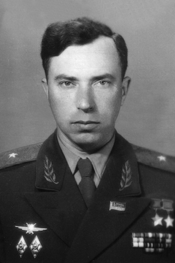
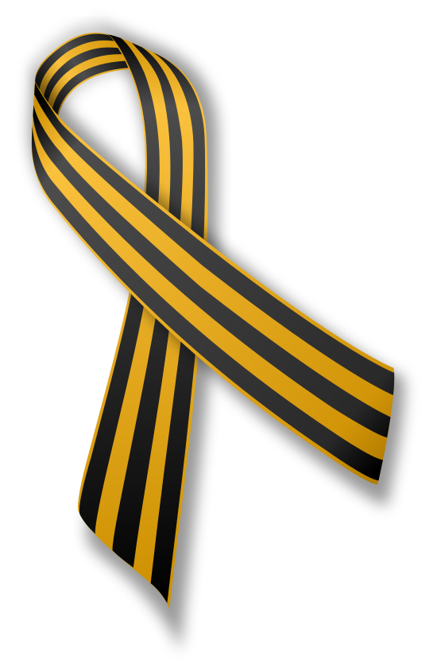

Леони́д Игна́тьевич Беда́- родился в 16 августа 1920, село Новопокровка, Рясская волость, Петропавловский уезд, РСФСР; ныне Узункольский район Костанайской области, Казахстан. Дважды Герой Советского Союза (26 октября 1944, 29 июня 1945), заслуженный военный лётчик СССР (17 августа 1971), генерал-лейтенант авиации (1972). В 1936 году окончил 7 классов школы, в 1940 году — Уральский учительский институт и аэроклуб в городе Уральск. В армии с августа 1940 года. В 1942 году окончил Чкаловскую военную авиационную школу лётчиков (г. Оренбург). Участник Великой Отечественной войны: в августе 1942-январе 1943 — лётчик, старший лётчик, штурман и командир авиаэскадрильи, помощник командира по воздушно-стрелковой службе 505-го (с марта 1943 года — 75-го гвардейского) штурмового авиационного полка. К апрелю 1944 года совершил 109 боевых вылетов. За мужество и героизм, проявленные в боях, Указом Президиума Верховного Совета СССР от 26 октября 1944 года гвардии старшему лейтенанту Беде Леониду Игнатьевичу присвоено звание Героя Советского Союза с вручением ордена Ленина и медали «Золотая Звезда». Сражался на Сталинградском, Южном, 4-м Украинском и 3-м Белорусском фронтах. Участвовал в Сталинградской битве, освобождении Донбасса, Южной Украины, Крыма, Белоруссии и Литвы, в Восточно-Прусской операции и штурме Кёнигсберга. Всего за время войны совершил 214 боевых вылетов на штурмовике Ил-2
